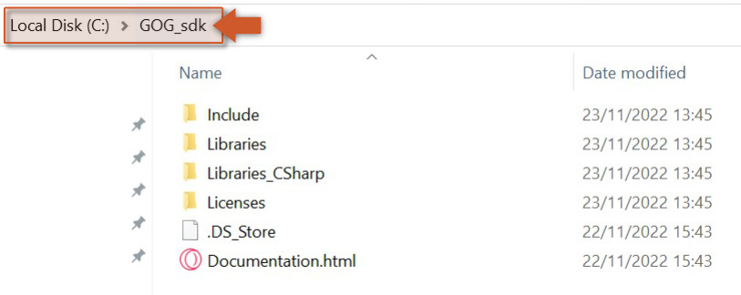
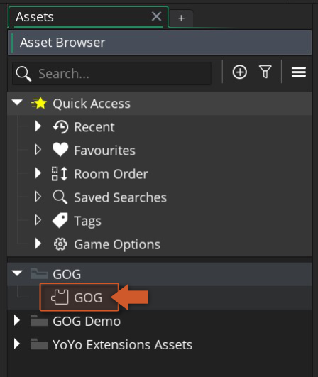
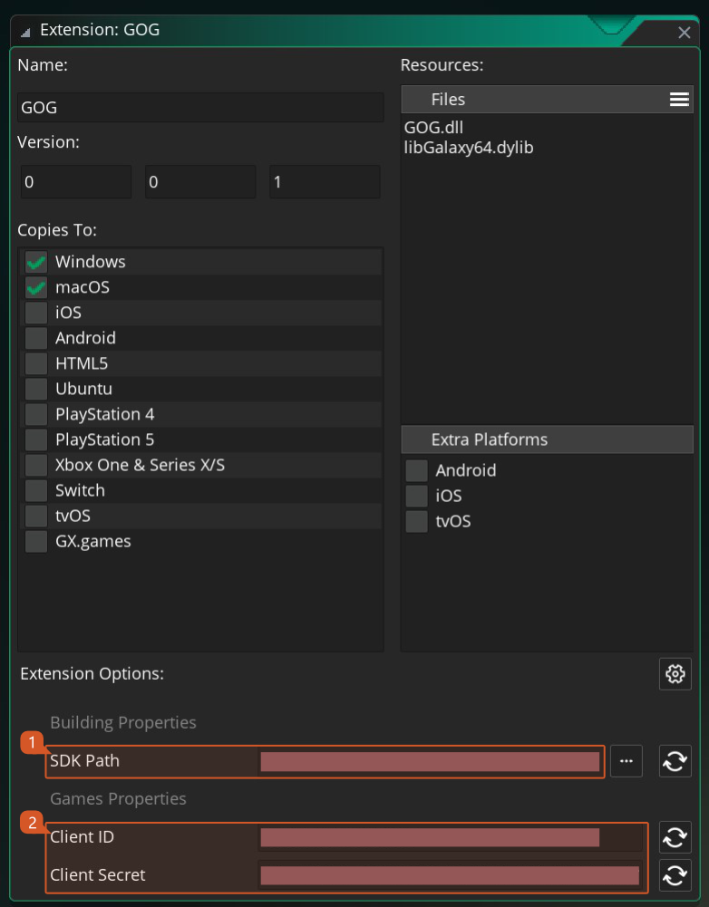

Setup Guide
To use the GOG API extension you should follow these steps:
- Import this GOG API extension into your project, if you haven't done that already.
- The GOG Launcher needs to be installed, running and with an account logged in (official site).
-
Download GOG SDK (v1.152.10) from GOG's developer portal and extract the contents of the zip into a directory of your choice (e.g.:
C:\GOG_sdk).
 -
To set up your game properties, double click on the GOG extension in your Asset Browser in the IDE.
 -
At the bottom of the extension widow you will find all the configurable options of the GOG extension.
 -
The options are split in two sections Building Properties and Game Properties . The first one is a folder path that should point to the extracted folder of step 3, the second section will allow you to configure all the settings that are required for running and publishing a game to GOG Store.